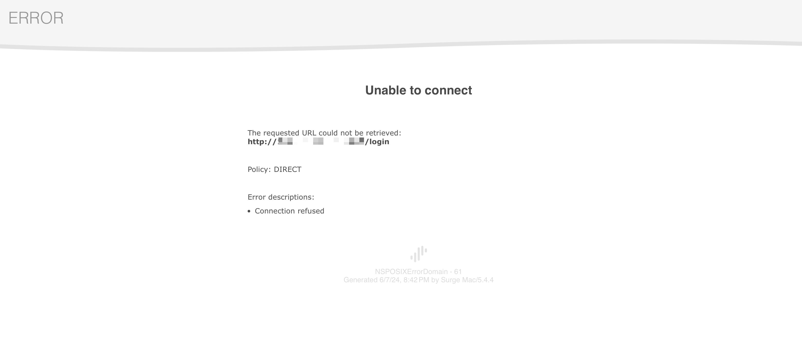
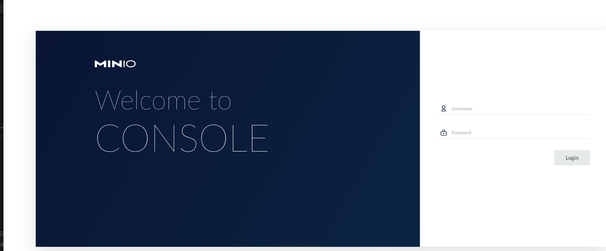

Bug report
helinwang commented on Jul 21, 2017 • I got similar error:
open /var/lib/docker/tmp/docker-import-347673752/bin/json: no such file or directory It's because I ran docker load, trying to import the output of docker export. The correct way is to run docker import for the output of docker export. (docker load is for the output of docker save). Better error message from docker would be more helpful.
ran md5 checksums on the images before and after I moved them across systems
brew install md5sha1sum
md5sum phoenix.tar.gz
6f7ea1a750fbbe4e81b3431250275553 phoenix.tar.gz
- ssh 登录云服务器频繁断开链接
vim /etc/ssh/sshd_config
[root@VM-20-10-centos ~]# cat /etc/ssh/sshd_config | grep Client
#ClientAliveInterval 0
#ClientAliveCountMax 3
[root@VM-20-10-centos ~]# vim /etc/ssh/sshd_config
[root@VM-20-10-centos ~]# systemctl restart sshd #重启sshd服务
[root@VM-20-10-centos ~]# cat /etc/ssh/sshd_config | grep Client
ClientAliveInterval 30 #客户端每隔多少秒向服务发送一个心跳数据
ClientAliveCountMax 86400 #客户端多少秒没有相应，服务器自动断掉连接
kingToolbox commented on Jun 29, 2022
Unfortunately, there is no way to retrieve the master password. 😞 You can reset the master password to an empty string through the steps below:
Open the file .wind/profiles/default.v10/user.config and delete the lines containing application.fingerprint and application.masterPassword. Open the file .wind/profiles/default.v10/terminal/user.sessions and delete the lines containing session.autoLogin. Note that all automatic login information will be lost.
- IDEA2023 创建 spring 工程无法选择 jdk8 与 11 的解决办法
我们只需要改变我们的 spring 项目构建网站即可，点击创建 spring 项目窗口上方的服务器 URL 后的齿轮按钮，将网站更改即可，可以使用阿里云的构建网站https://start.aliyun.com/
[root@VM-20-10-centos ~]# docker run -it -d --name redis -p 6379:6379 \
> -v /root/redis/conf:/usr/local/etc/redis \
> -e TZ=Asia/Shanghai \
> redis:6.0.10 \
> redis-server /usr/local/etc/redis/redis.conf
ea7897d35aa55d06ceddda2dd8b96b4dc7a2f05a4c1ab8accba6488bb5fc3395
- 修改已经创建的 docker 容器配置
[root@VM-20-10-centos ~]# cd /var/lib/docker/containers/
[root@VM-20-10-centos containers]# ls -la
total 16
drwx------ 4 root root 4096 Jun 7 19:53 .
drwx--x--x 11 root root 4096 Jun 7 19:25 ..
drwx------ 5 root root 4096 Jun 7 19:53 ae47c9eb876cd81d8fd55d118fe379474a000949a2c21e41acc883d3cda95f20
drwx------ 5 root root 4096 Jun 7 19:36 c0a8bb6d2769fb153d2199ef7c59ee3bfd6ab9077679ae086009c1aecee38a1c
[root@VM-20-10-centos containers]# docker ps -a
CONTAINER ID IMAGE COMMAND CREATED STATUS PORTS NAMES
ae47c9eb876c redis:6.0.10 "docker-entrypoint..." 13 minutes ago Exited (1) 13 minutes ago redis
c0a8bb6d2769 boostport/hbase-phoenix-all-in-one:2.0-5.0 "/start-hbase-phoe..." 31 minutes ago Up 31 minutes 0.0.0.0:2181->2181/tcp, 0.0.0.0:8765->8765/tcp, 0.0.0.0:15165->15165/tcp, 0.0.0.0:16000->16000/tcp, 0.0.0.0:16010->16010/tcp, 0.0.0.0:16020->16020/tcp phoenix
[root@VM-20-10-centos containers]# cd ae47c9eb876c/
-bash: cd: ae47c9eb876c/: No such file or directory
[root@VM-20-10-centos containers]# cd ae47c9eb876cd81d8fd55d118fe379474a000949a2c21e41acc883d3cda95f20
[root@VM-20-10-centos ae47c9eb876cd81d8fd55d118fe379474a000949a2c21e41acc883d3cda95f20]# ls -la
total 44
drwx------ 5 root root 4096 Jun 7 19:53 .
drwx------ 4 root root 4096 Jun 7 19:53 ..
drwx------ 2 root root 4096 Jun 7 19:53 checkpoints
-rw-r--r-- 1 root root 3165 Jun 7 19:53 config.v2.json
-rw-r--r-- 1 root root 1206 Jun 7 19:53 hostconfig.json
-rw-r--r-- 1 root root 13 Jun 7 19:53 hostname
-rw-r--r-- 1 root root 174 Jun 7 19:53 hosts
-rw-r--r-- 1 root root 89 Jun 7 19:53 resolv.conf
-rw-r--r-- 1 root root 71 Jun 7 19:53 resolv.conf.hash
drwxr-xr-x 3 root root 4096 Jun 7 19:53 secrets
drwx------ 2 root root 4096 Jun 7 19:53 shm
[root@VM-20-10-centos ae47c9eb876cd81d8fd55d118fe379474a000949a2c21e41acc883d3cda95f20]# vim hostconfig.json
[root@VM-20-10-centos ae47c9eb876cd81d8fd55d118fe379474a000949a2c21e41acc883d3cda95f20]# vim config.v2.json
[root@VM-20-10-centos ae47c9eb876cd81d8fd55d118fe379474a000949a2c21e41acc883d3cda95f20]#
docker logs minio
12:21:23.20
12:21:23.21 Welcome to the Bitnami minio container
12:21:23.21 Subscribe to project updates by watching https://github.com/bitnami/bitnami-docker-minio
12:21:23.21 Submit issues and feature requests at https://github.com/bitnami/bitnami-docker-minio/issues
12:21:23.21
12:21:23.21 INFO ==> ** Starting MinIO setup **
12:21:23.22 INFO ==> ** MinIO setup finished! **
minio 12:21:23.24 INFO ==> ** Starting MinIO **
ERROR Unable to validate credentials inherited from the shell environment: Invalid credentials
> Please provide correct credentials
HINT:
Access key length should be at least 3, and secret key length at least 8 characters
- minio MINIO_ROOT_PASSWORD 长度未达到要求
想进入minio web管理界面时报错

查看日志
docker logs minio
ERROR Unable to validate credentials inherited from the shell environment: Invalid credentials
> Please provide correct credentials
HINT:
Access key length should be at least 3, and secret key length at least 8 characters
检视 minio 容器配置
docker inspect minio | grep -A 5 Env
"Env": [
"TZ-Asia/Shanghai",
"MINIO_ROOT_USER=root",
#原密码隐私处理,就是长度不够8位
"MINIO_ROOT_PASSWORD="*****",
"MINIO_SKIP_CLIENT=yes",
"PATH=/opt/bitnami/common/bin:/opt/bitnami/minio-client/bin:/opt/bitnami/minio/bin:/usr/local/sbin:/usr/local/bin:/usr/sbin:/usr/bin:/sbin:/bin",
-
防止修改后容器配置不生效，先停止 docker 服务
systemctl stop docker -
编辑 congfig.v2.json 修改
MINIO_ROOT_PASSWORD的Miami,保存退出。 -
重启docker服务
systemctl start docker -
查看镜像是否启动
docker ps -
自己的镜像没有启动时，手动启动即可
docker start [CONTAINER ID | CONTIANER NAME]
详细过程
cd /var/lib/docker/containers/
docker ps -a
CONTAINER ID IMAGE COMMAND CREATED STATUS PORTS NAMES
c257d676ec59 bitnami/minio:latest "/opt/bitnami/scri..." 41 minutes ago Exited (1) 58 seconds ago minio
96ccf67d5239 rabbitmq:3.8.9 "docker-entrypoint..." 48 minutes ago Exited (0) 2 minutes ago mq
ae47c9eb876c redis:6.0.10 "docker-entrypoint..." About an hour ago Exited (1) About an hour ago redis
c0a8bb6d2769 boostport/hbase-phoenix-all-in-one:2.0-5.0 "/start-hbase-phoe..." About an hour ago Exited (137) 2 minutes ago phoenix
ls -la
total 24
drwx------ 6 root root 4096 Jun 7 20:21 .
drwx--x--x 11 root root 4096 Jun 7 19:25 ..
drwx------ 5 root root 4096 Jun 7 21:00 96ccf67d52394654d2e47f88fbeeed1c3dde439a1684f153dc4fb08e1f301764
drwx------ 5 root root 4096 Jun 7 21:00 ae47c9eb876cd81d8fd55d118fe379474a000949a2c21e41acc883d3cda95f20
drwx------ 5 root root 4096 Jun 7 21:00 c0a8bb6d2769fb153d2199ef7c59ee3bfd6ab9077679ae086009c1aecee38a1c
drwx------ 5 root root 4096 Jun 7 21:01 c257d676ec59ae7768bb812fcc9b5337fe52f0c43d7443341b692bf783012b3d
cd c257d676ec59ae7768bb812fcc9b5337fe52f0c43d7443341b692bf783012b3d
ls -la
total 44
drwx------ 5 root root 4096 Jun 7 21:01 .
drwx------ 6 root root 4096 Jun 7 20:21 ..
drwx------ 2 root root 4096 Jun 7 20:21 checkpoints
-rw-r--r-- 1 root root 3324 Jun 7 21:01 config.v2.json
-rw-r--r-- 1 root root 1248 Jun 7 21:01 hostconfig.json
-rw-r--r-- 1 root root 13 Jun 7 21:01 hostname
-rw-r--r-- 1 root root 174 Jun 7 21:01 hosts
-rw-r--r-- 1 root root 89 Jun 7 21:01 resolv.conf
-rw-r--r-- 1 root root 71 Jun 7 21:01 resolv.conf.hash
drwxr-xr-x 3 root root 4096 Jun 7 21:01 secrets
drwx------ 2 root root 4096 Jun 7 20:21 shm
vim config.v2.json
终于进入到登录界面 